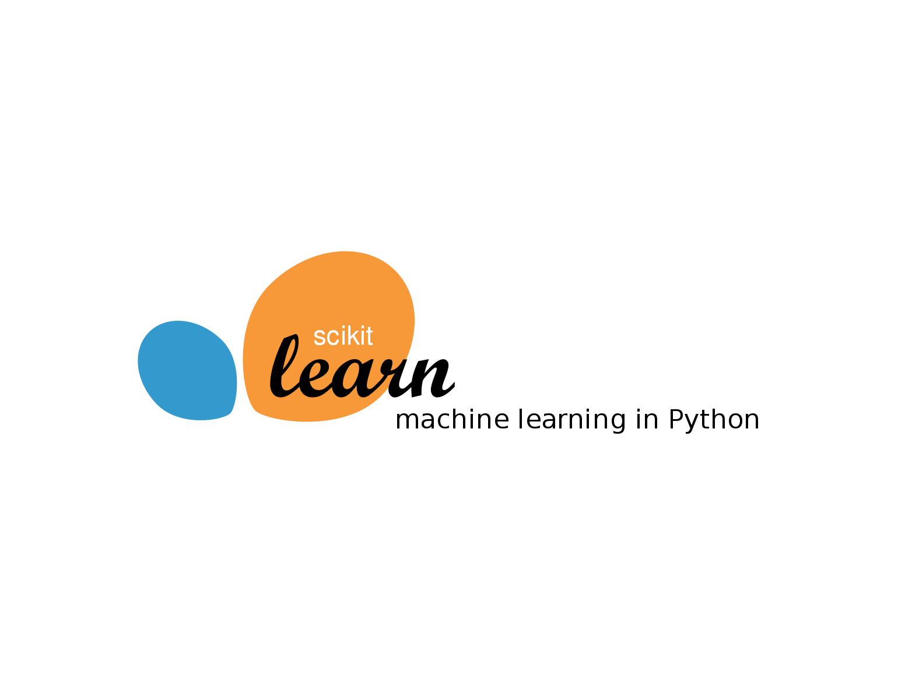
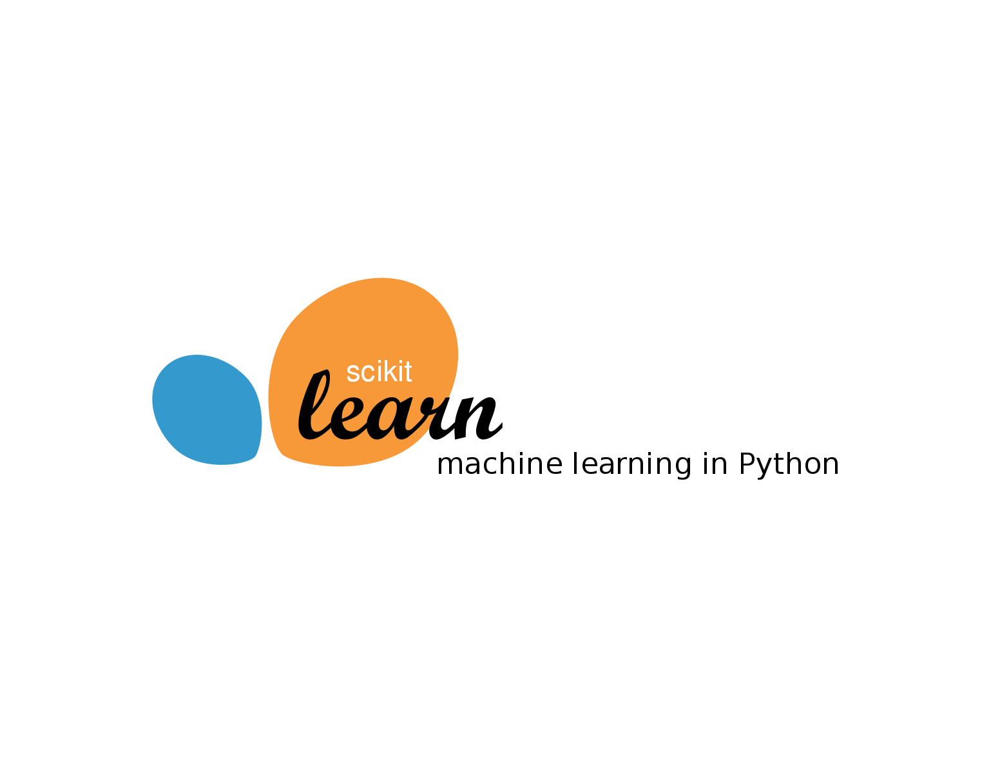
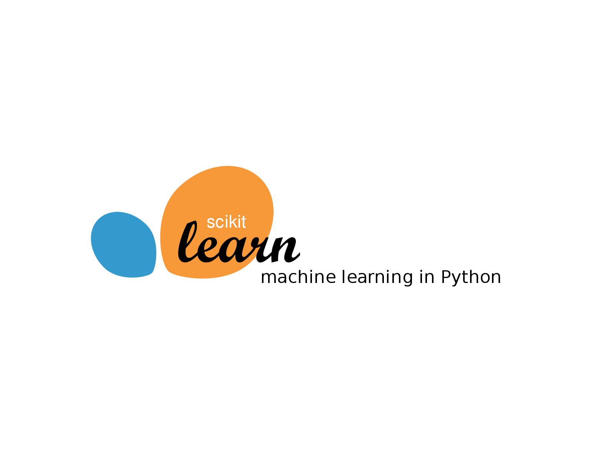

Final Year Student and dedicated individual with a background in Computer Science and a specialization in Data Science at VIT Vellore. My strong programming skills in Java and Python have allowed me to excel in this field. I have showcased my proficiency and commitment to the field of AI through my Articles, Projects, and Active engagement in extra-curricular activities. My constant thirst for knowledge and eagerness to explore cutting-edge technologies in AI drive me and contribute to the ever-evolving landscape of AI.
Learn more

This project involved fine-tuning the powerful GPT-2 language model on a medical query dataset. By training the model on a collection of medical queries and responses, it gained specialized knowledge in the medical domain. The resulting Medical GPT-2 system demonstrates significant potential in providing reliable medical information, aiding healthcare professionals, patients, and individuals seeking valuable insights in the medical field.
This Project helps to diagnose images of Normal and Pneumonia X-rays and classify them using CNN. This project concludes that with data augmentation and sufficient Hyperparametric tuning this model beats many traditional methods. The PropModel achieved an accuracy of 95% on training and an accuracy of 81% on testing. A front-end is developed using Streamlit App where it allows users to upload an image, displays the uploaded image, and generates a prediction report.
Developed a real-time face detection and recognition system using state-of-the-art deep learning techniques. The project leveraged computer vision algorithms and deep neural networks to detect and recognize faces in images. The system achieved high accuracy and robust performance, even in challenging scenarios such as low-light conditions and occlusions.
Summer Intern, Cipla
Published articles on Deep Learning
IBM TechXchange
Official Board Member 2K23 - 24
Sahiti - TLA, Student Club